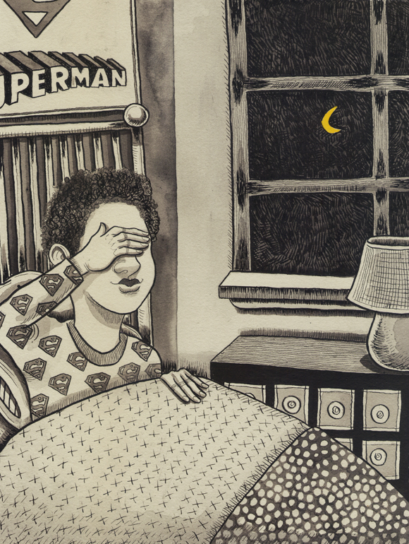

Notes from

Traditionally, Jews say the Shema (Here O Israel the Lord our God is one) as their last words on earth.
Clearly Citizen Kane was not a Jew.
It is for this same reason that Jewish children are taught to say it before they go to sleep. In case they don’t wake up.
This nightly reminder may explain both my monotheism and my recurring nightmares.